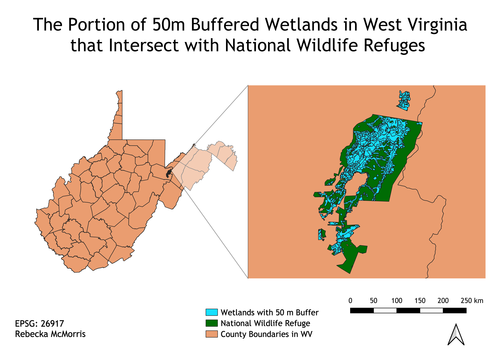

For this map, I wanted to answer the question of "What proportion of buffered wetlands intersect with National Wildlife Refuges in the state of West Virginia?" Wetlands are vital ecosystems for wildlife and also have benefits for humans, such as filtering out harmful pollutants. I wanted to see how much overlap there was between wildlife refuges in the state and wetland areas, since wetlands are home to so many important species. I created a 50 meter buffer around the wetlands because there is no guarentee that all species fall exactly within the wetland boundary provided, so the buffer gives a little wiggle room to account for possible species that were left out of the exact boundaries. It turns out there is only 1 National Wildlife Refuge in the state, so I intersected it with the layer of buffered wetlands to determine what portion of wetlands have protected wildlife areas. Within the wildlife refuge, a large portion of the area is wetland. However, since only a very small section of the state is a National Wildlife Refuge, only a very small proportion of wetlands in the state fall within a protected wildlife area.
